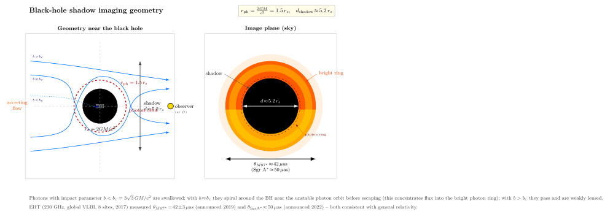

EHT 拍到的"黑洞照片"是什么?
2019 年 4 月 10 日下午, 全球六个城市同步召开新闻发布会, EHT (Event Horizon Telescope, 事件视界望远镜) 合作组公布了人类第一张"黑洞照片": M87 椭圆星系中心、距地球约 5500 万光年的超大质量黑洞 M87*, 在 1.3 mm 波长射电频段的成像 — 一个橙红色的明亮环, 中心有一个明显的暗斑。三年后, 2022 年 5 月 12 日, 同一个合作组公布了第二张, 这次是我们自己银河系中心的 Sgr A* (人马座 A*), 4 百万太阳质量的怪物, 距地球 2 万 7 千光年, 同样的明亮环加中心暗斑结构。
这两张图刷遍了网络, 但很少有人解释清楚它们究竟是什么。我们这一节用 GR 把它从头推一遍: 那个"暗斑"是什么? 那个"亮环"是什么? 为什么是 $42\,\mu{\rm as}$ 而不是别的尺寸? 一台地面望远镜怎么能分辨出这么细的结构?
一、不是光学相片: 1.3 mm 波长的全球甚长基线干涉
第一件要说清楚的: 这不是一张光学照片。可见光在银河系中心的尘埃里完全无法穿透, 在 M87 的吸积盘里也被同步辐射光学厚度挡住。EHT 工作在毫米波—— 准确说是 230 GHz, 对应波长 $\lambda \approx 1.3$ mm。在这个波长上, 银河系尘埃几乎透明, 黑洞周围的吸积流又恰好光学厚度接近 1 的边缘, 看起来正好像一个发光的环。
第二件: 没有任何单一望远镜能分辨 $\mu{\rm as}$ 量级 (微角秒, $1\,\mu{\rm as}=10^{-6}$ 角秒). Hubble 太空望远镜光学衍射极限约 $0.05$ 角秒 $= 5\times 10^4\,\mu{\rm as}$, 比 M87* 阴影差了三个数量级。EHT 的解决办法叫甚长基线干涉 (VLBI): 把地球各地的射电望远镜联起来作为一台"虚拟望远镜", 衍射极限由 Rayleigh 公式给
$$ \theta_{\rm res} \approx 1.22\,\frac{\lambda}{D_{\rm baseline}}, $$
其中 $D_{\rm baseline}$ 是望远镜对之间最长的基线。EHT 用了从夏威夷 SMA, 到亚利桑那 SMT, 到墨西哥 LMT, 到智利 ALMA, 到西班牙 IRAM, 到南极 SPT 共 8 个站, 最长基线接近地球直径 $D\approx 1.3\times 10^7$ m. 代进去 $\theta_{\rm res}\approx 1.22\times 1.3\times 10^{-3}/1.3\times 10^7\approx 1.2\times 10^{-10}$ rad $\approx 25\,\mu{\rm as}$ — 刚刚够分辨 M87* 与 Sgr A* 的阴影。
2017 年 4 月 5–11 日, 这八个站同时对准 M87 与 Sgr A* 各几个晚上, 收下了约 5 PB 的原始数据 (磁盘运回 MIT 与 Max Planck 物理处理, 因为太大走不了网络)。两年的相关与成像处理之后, 出来的图就是我们看到的甜甜圈。
二、光子球: 临界圆轨道的解析推导
为什么图像里有一个清晰的环? 因为黑洞附近, 时空弯曲到光子可以做圆轨道的程度。我们从 Schwarzschild 度规 ($c=1$ 写, 之后再补)
$$ \mathrm d s^2 = -\Big(1-\frac{r_s}{r}\Big)\mathrm d t^2 + \Big(1-\frac{r_s}{r}\Big)^{-1}\mathrm d r^2 + r^2(\mathrm d\theta^2+\sin^2\theta\,\mathrm d\phi^2), $$
其中 $r_s=2GM/c^2$ 是事件视界。考虑赤道面 ($\theta=\pi/2$) 上一个零测地线 (光子轨迹), 用守恒量 $E=(1-r_s/r)\dot t$ 与 $L=r^2\dot\phi$ (上点表示对仿射参数求导), 加上零测地线条件 $\mathrm d s^2=0$, 整理得有效势
$$ \dot r^2 = E^2 - \Big(1-\frac{r_s}{r}\Big)\frac{L^2}{r^2}\equiv E^2-V_{\rm eff}^2(r). $$
圆轨道要求 $\mathrm d V_{\rm eff}^2/\mathrm d r = 0$. 直接求导, 把 $r_s=2GM/c^2$ 代入, 给出
$$ \boxed{\;r_{\rm ph} \;=\; \frac{3GM}{c^2} \;=\; \tfrac{3}{2}\,r_s.\;} \tag{1} $$
这就是公式 (1): 光子球 (photon sphere) 半径。在 $r=r_{\rm ph}$ 处, 光子可以绕黑洞做圆轨道 — 但这是一个不稳定圆轨道 ($\mathrm d^2 V_{\rm eff}^2/\mathrm d r^2 \lt 0$): 略微靠近就螺旋落入视界, 略微远离就螺旋飞回无穷远。所以现实中没有光子真的"绕住"; 光子球更像一道分水岭, 决定哪些光线能逃出黑洞引力。
顺便说: Schwarzschild 度规没有更内层的稳定光子轨道; Kerr 黑洞 (旋转的) 在赤道面上有顺转与逆转两个不同半径的光子环, 中间还有更复杂的非赤道光子轨道族。但基本物理一致: 存在一个光子轨迹的临界圆。
三、阴影直径 $\sqrt{27}\,GM/c^2$
从极远的观察者看, 朝黑洞方向射来一束光线, 哪些会被吞进去, 哪些会绕黑洞偏折再出来? 答案由临界冲击参数 $b_c$ 决定。冲击参数 $b\equiv L/E$ (在 $c=1$ 单位下), 临界条件是光子轨迹刚好碰到 $r_{\rm ph}$ 又转身飞回无穷远 — 这时光子做无限多圈的"球面螺旋"。代入 $V_{\rm eff}^2$ 在 $r_{\rm ph}=3GM/c^2$ 的极大值条件, 得
$$ b_c = \frac{r_{\rm ph}}{\sqrt{1-r_s/r_{\rm ph}}} = \frac{3GM/c^2}{\sqrt{1-2/3}} = \frac{3\sqrt{3}\,GM}{c^2}. $$
对无穷远的观察者, $b_c$ 就是黑洞投在天空上的阴影半径; 阴影直径
$$ d_{\rm shadow} = 2 b_c = \frac{6\sqrt{3}\,GM}{c^2} = \sqrt{108}\,\frac{GM}{c^2}\approx 5.196\,r_s. $$
(用恒等式 $6\sqrt 3=\sqrt{108}$, 又 $r_s=2GM/c^2$ 给出系数约 5.196。) 注意阴影并不等于事件视界: 视界 $r_s$ 在天空上的"几何"半径如果不考虑光线弯曲只会显出 $r_s$ 大小, 但 GR 的强透镜效应把它放大成 $\sqrt{27}\,GM/c^2 = 2.6\,r_s$ 的半径, 即 $5.2\,r_s$ 的直径。我们看到的"暗斑", 比视界本身大约 2.6 倍。
把它换成角直径 (从距离 $D$ 看), 得到
$$ \boxed{\;\theta_{\rm shadow} \;\approx\; \sqrt{27}\,\frac{GM}{c^2 D} \;\approx\; 5.2\,\frac{GM}{c^2 D}.\;} \tag{2} $$
这就是公式 (2): 黑洞阴影的角直径公式。代入 M87*: 质量 $M = 6.5\times 10^9 M_\odot \approx 1.3\times 10^{40}$ kg (恒星动力学测得), 距离 $D = 16.8$ Mpc $\approx 5.2\times 10^{23}$ m. 算 $GM/c^2 = 6.674\times 10^{-11}\cdot 1.3\times 10^{40}/(3\times 10^8)^2 \approx 9.6\times 10^{12}$ m. 除以 $D$ 得 $\approx 1.85\times 10^{-11}$ rad. 乘 $\sqrt{27}\approx 5.196$, 得到 $\approx 9.6\times 10^{-11}$ rad $\approx 19.8\,\mu{\rm as}$ — 这是半径, 直径 $\theta_{\rm shadow}\approx 40\,\mu{\rm as}$. EHT 的实测值 $42\pm 3\,\mu{\rm as}$, 在 GR 预言误差范围内。
对 Sgr A*: $M = 4.15\times 10^6 M_\odot$, $D = 8.27$ kpc $\approx 2.55\times 10^{20}$ m. 同样计算, $GM/c^2 \approx 6.1\times 10^9$ m, 除以 $D$ 得 $\approx 2.4\times 10^{-11}$ rad, 乘 $5.196$ 得 $\approx 1.25\times 10^{-10}$ rad $\approx 26\,\mu{\rm as}$ 半径, 直径约 $52\,\mu{\rm as}$. 实测 $\approx 50\,\mu{\rm as}$, 与 GR 预言一致。两个相差三个数量级质量、四个数量级距离的黑洞, 阴影角度居然差不多 — 这是因为它们的 $M/D$ 比值近似相等 (M87* 巨大但远, Sgr A* 小但近)。

四、那个亮环来自哪里? 同步辐射 + 强透镜
有了"暗斑"是阴影, 那"亮环"是什么? 图像里 M87* 那一圈橙红色的、不均匀的、亮度有方向不对称性的环, 来自同步辐射: 黑洞周围有热气体盘 (吸积流), 温度 $\sim 10^{10}$ K, 充满相对论性电子。这些电子在黑洞附近的强磁场 ($\sim 1$ Gauss 量级, 算不算大就看你跟什么比) 里螺旋运动, 辐射同步辐射, 在 230 GHz 频段发出射电波。
但我们之所以看到一个清晰的环而不是模糊的盘, 关键是 GR 的强透镜效应: 光子球附近的光线被严重弯折, 在天空上聚集成一道狭窄的"光子环" (photon ring) — 严格说有无穷多层 (转 1 圈、2 圈、…的光子各形成一道, 越内越窄但数量级越来越弱)。最外层的"主环"宽度由吸积流的几何决定, 大约是阴影直径的一半左右。
方向不对称是多普勒增强: 吸积流是绕黑洞旋转的, 朝我们运动那一侧的光被蓝移加强, 远离的那一侧红移减弱; M87* 图里下半亮、上半暗, 暗示吸积流轴指向我们, 旋转面以南半球更靠近视线方向。再深入分析能给出黑洞自旋方向。
有一个有趣的 sanity check: 如果阴影直径只是事件视界 $r_s$ 投影, 我们应当看到 $\theta\approx r_s/D$, 数值上比 GR 预言小约 2.6 倍。EHT 测到的 $42\,\mu{\rm as}$ 与 GR 公式 (2) 吻合, 而比纯几何预言 ($\approx 16\,\mu{\rm as}$) 大得多, 这本身就是 GR 在强场下的一次干净检验。
五、从 Bardeen 1973 到 EHT 2019: 一段四十年的"画像"接力
"黑洞照片"看似 21 世纪的工程奇迹, 它的物理图像四十年前就基本建好了。1973 年, James Bardeen 写了一篇章节 (在 DeWitt-Morette 编的"Black Holes" 卷中) 解析地推导了 Schwarzschild 与 Kerr 黑洞的光线追迹, 给出了我们刚才推的阴影直径公式 (2), 还画了一张手绘的明亮吸积盘 + 中央阴影示意图 — 那张图与 EHT 2019 公布的图惊人相似。Bardeen 当时的目的是理论好奇: 如果你能"看见"一个黑洞会是什么样? 但当时没有任何技术能实现这一点。
1979 年, Jean-Pierre Luminet 用一台 IBM 7040 大型机模拟了一个穿过 Schwarzschild 度规的吸积盘的视觉效果, 用手工把计算出的亮度点 (60×60 阵列) 在白纸上点黑, 得到了第一张逼真的黑洞渲染图。这张图后来出现在 Christopher Nolan 2014 年的《Interstellar》里, Kip Thorne 把它发展成全规格的 GR 渲染管线 (DNGR), 影片里那个 Gargantua 的视觉效果就是这套物理。
1991 年, Heino Falcke 还在博士读, 在德国波恩 Max Planck 射电所跟着 Peter Mezger 研究银河中心。1994 年他与同事注意到 230 GHz 是一个特别的"窗口" — 高于这个频率银河系中心的散射 (来自星际等离子体的湍流) 不再屏蔽到看不见; 低于则信号太弱。1999–2000 年, Falcke、Melia、Agol 三人写了一篇"Viewing the Shadow of the Black Hole at the Galactic Center", 第一次精确算出 Sgr A* 的阴影应当多大 (40–50 $\mu{\rm as}$), 并指出地球大小的 230 GHz VLBI 阵列足以分辨。这篇论文奠定了 EHT 的所有物理基础。
2009 年, Sheperd Doeleman 在 MIT Haystack 发起 EHT 合作组, 把全球 230 GHz 望远镜联起来。2017 年 4 月 5–11 日, 八个站同时观测 M87 与 Sgr A* 各几晚 (整周天气合作的窗口非常窄), 数据装进硬盘飞到 MIT 与 Max Planck Bonn, 用相关器拼出干涉度量。两年的成像处理后, 2019 年 4 月 10 日公布 M87*, 2022 年 5 月 12 日公布 Sgr A*。
之所以 M87* 先公布、Sgr A* 后公布: M87* 周围吸积流在距离尺度 ($\sim 9\times 10^{12}$ m) 上的轨道周期约 $1$ 个月, 一个晚上的观测期间结构基本不变, 容易成像; Sgr A* 周围吸积流轨道周期只有 $\sim 30$ 分钟, 一个晚上里图像在抖动, 处理需要复杂的"动态成像"算法, 多用了三年。这种动态时间尺度的差别也告诉我们一件事: 黑洞越小、吸积流离视界越近, 时间尺度越短, 因为它由 $r_s/c \propto M$ 量级支配。M87* 一个特征时间约 $10$ 小时, Sgr A* 只有几十秒。
EHT 的下一步是 ngEHT (next-generation EHT), 加更多站、加 345 GHz 波段、加多波段同步, 目标是看到 photon ring 的精细结构、测量黑洞自旋、跟时间分辨地"拍电影"看吸积流的演化。配合 LISA 的引力波数据, 我们将进入"黑洞电磁与引力联合天文学"的时代 — 同一个黑洞合并事件, 既能用 LISA 听到时空涟漪, 又能用 EHT 看到光的几何被引力扭曲的样子, 两条独立证据线交叉验证 GR 的强场预言。
小结
EHT 的"黑洞照片"不是普通光学摄影, 而是 230 GHz 全球 VLBI 干涉成像 — 那个明亮环是吸积流的同步辐射在 GR 强透镜下的几何聚集, 中央暗斑是黑洞阴影。我们从 Schwarzschild 度规出发, 推出光子球 $r_{\rm ph}=3GM/c^2=1.5\,r_s$ (公式 (1)) 与阴影角直径 $\theta_{\rm shadow}\approx \sqrt{27}\,GM/(c^2 D)\approx 5.2\,GM/(c^2 D)$ (公式 (2))。代入 M87* 得到 $\theta\approx 42\,\mu{\rm as}$, 与 EHT 2019 测值 $42\pm 3\,\mu{\rm as}$ 吻合; 代入 Sgr A* 得到 $\theta\approx 50\,\mu{\rm as}$, 也与 2022 年公布图一致。从 Bardeen 1973 年的解析推导, 经 Falcke 等 2000 年关于 Sgr A* 可成像的预测, 到 2009 年启动的 EHT、2017 年同步观测、2019 与 2022 年的两张照片, 广义相对论被一直推到了"我们能直接看见黑洞影子"的地步 — 第 5 节 (Rindler) 与第 16 节 (事件视界) 那个抽象的"光逃不出去"边界, 在天空上印出了 $42\,\mu{\rm as}$ 的圆斑。下一节, 我们走入这条故事最后一幕: 量子引力 — 当时空既要弯曲又要被量子化, 物理学还没有完成的部分。
▲